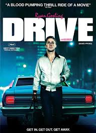

Drive
Sinopsis
Drive cuenta la historia de un misterioso conductor que lleva una doble vida: de día trabaja como mecánico y especialista en escenas de riesgo para el cine, y de noche se convierte en chófer para delincuentes. Todo cambia cuando se involucra con su vecina y su hijo, lo que lo arrastra a un mundo de violencia y traiciones.
- Director: Nicolas Winding Refn
- Año: 2011
- Género: Acción, Thriller, Cine romántico, Cine negro
- Duración: 1h 40min
Trailer de la pelicula
Banda sonora de la pelicula
- Drive